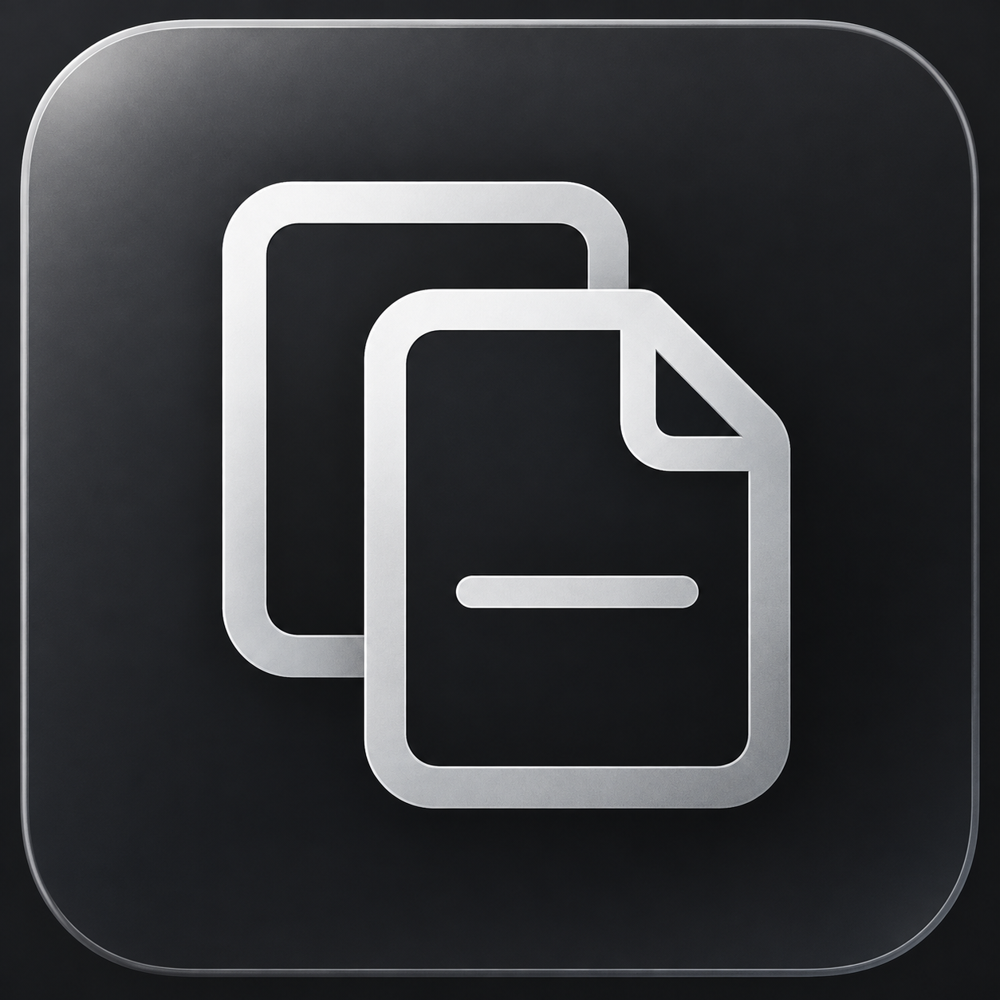

Send both ways
Share text, images, and files between your paired devices.

ClipToMacANDROID ↔ MAC
Send the link, photo, or file you need to your other device over your local network.
Set up ClipToMacTHE TOOLKIT
Share text, images, and files between your paired devices.
Search the Mac library and pin clips you want to keep handy.
Choose which Android apps can mirror notification previews to your Mac.
GET STARTED
Use the build instructions in each project’s README. Requires Android 8 or later and macOS 13 or later.
Connect both devices to the same network and scan the Mac pairing code in the Android app.
Share a link from Android or send clipboard content from the Mac library.
FAQ
Transfers go directly between paired devices on your local network using pinned HTTPS.
Android and the source app can limit copy detection. Use the Android Share menu when a copy is missed.
Yes. Enable notification access on Android and select the apps you want to mirror. Mirrored previews can appear in macOS Notification Center.